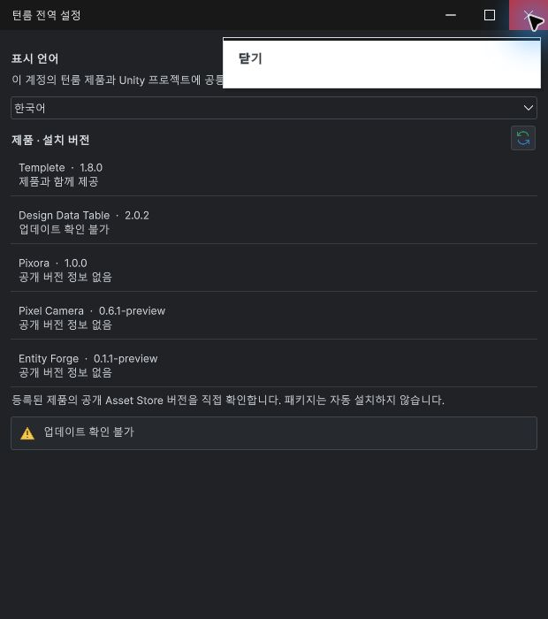
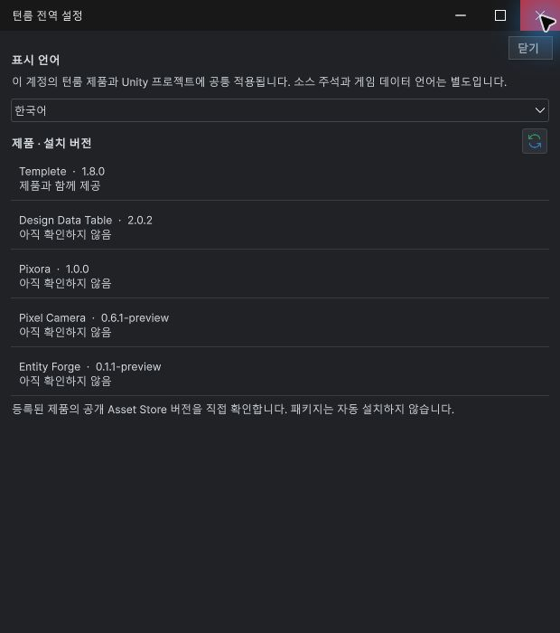
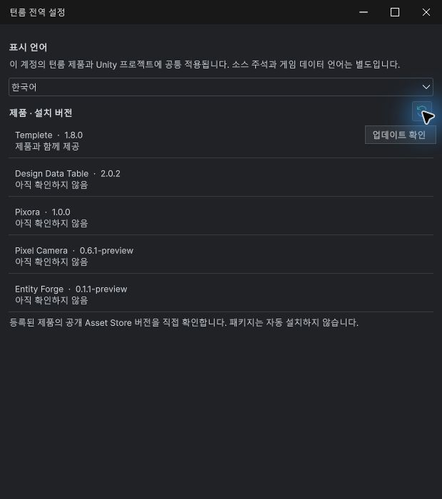
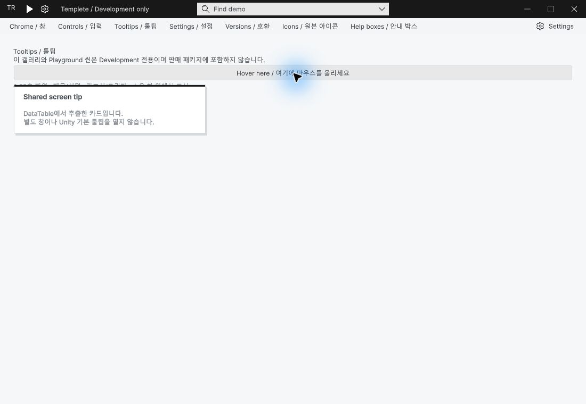

Tracefolio REPORTS & ISSUES
Tracefolio REPORTS & ISSUES공통 툴팁 · 이름만 있을 때 작은 라벨로 표시
완료이름만 있는 툴팁은 글자 폭에 맞춘 작은 중립색 라벨입니다. 설명·단축키가 있는 툴팁은 기존 상세 카드를 유지합니다.
작업 결과
실제 Unity에서 닫기·새로고침 소형 툴팁과 설명형 카드 유지를 확인했습니다.
변경 내용
적용 내용
이름 전용 툴팁은12px 보통 글꼴, 좌우10px 여백, 최소26px 높이로 표시합니다. 제목 강조선과 큰 빈 영역을 제거하고 소유 창의 명암 테마를 적용합니다. 긴 이름은 최대280px 안에서 줄바꿈하고 창 경계에 맞춥니다. 설명 또는 단축키가 있으면 기존 카드를 사용합니다.
확인 중 발견한 중첩 UI의 툴팁 누락도 수정했습니다. 소유 창의 자식 루트에서 수집된 툴팁을 실제 소유 창 안에서 그릴 수 있습니다. 새로고침 버튼이 이 경로에 해당합니다.




검증
Unity6000.0.83f1에서 현재 공통 어셈블리를 실제 로드하고 포인터로 표시·캡처했습니다. 실제 글꼴 측정: 닫기49×26px, 업데이트 확인100×26px. 긴 다국어 이름280×40.6px, 오른쪽·아래 경계 안 배치 통과. 설명·단축키 분기와 공백 설명 처리 통과.
9언어 안내·현재 이미지57개 검사 오류0, 공통45링크·기존5개 캡처 이력 보존 검사 통과. 모든 언어·DPI·명암 조합을 시각 검증한 것은 아닙니다.
남은 사항
공통 툴팁 소스·문서 변경이며 스토어 업로드 패키지는 다시 생성하지 않았습니다. 최종 제출 전 최신 소스 포함 재포장·검증이 필요합니다. 모든 키보드·배율·언어 조합 검증은 미실행입니다.
첫 컴파일에서 다른 어셈블리의 내부 테마 API 접근 오류를 확인했습니다. DDT 호출부는 원래대로 보존하고 UI Toolkit 소유 루트의 테마 전달만 적용해 수정했습니다. 오류가 있던 이전 도메인은 검증 완료로 사용하지 않았습니다.
교훈 검토: 기존 공통 UI·테마 상속 규칙에 해당해 전역 지침 변경 없음. 이름 전용/설명형 디자인 기준은 프로젝트 안내에 기록했습니다.
작업 시간
- 제안 시간: 5~10분
- 실제로 완료된 시간: 실제 구현·검증 19분 21초, 확인 2026-11-02 15:26:01 KST. 시작2026-11-02 15:06:40 KST. 중첩 UI 툴팁 누락 수정·컴파일 회귀·캡처로 최초5~10분 예상 초과. 공개 배포 확인은 이어서 수행합니다.
- XERJ: 실패 — Status: node not running. 직전 Search의 data directory lock을 보존하고 rg로 현재 TipCard·ScreenTips·호출부를 대조했습니다.